Egészségügy
VR-tréning
Kockázatmentes gyakorlás virtuális környezetben, mérhető eredménnyel.
Egyedi fejlesztések, adaptálható platformok és kész szoftverek tréninghez, értékesítéshez, kiállításokhoz és ügyfélkiszolgáláshoz.

Hős-panel · mintaMinden kártya: mono kicker, könnyű nagybetűs cím, rövid leírás. A hover keretet vált, nem emelkedik.
Kockázatmentes gyakorlás virtuális környezetben, mérhető eredménnyel.
Érintőképernyős és AR-es termékbemutató kiállításokra.
Digitális autószalon: a vevő megnézi, mielőtt megérkezik az autó.
A sötét sáv a világos oldalon is használható; a lábléc mindig ilyen.
Írja le röviden, mit szeretne elérni — válaszolunk.